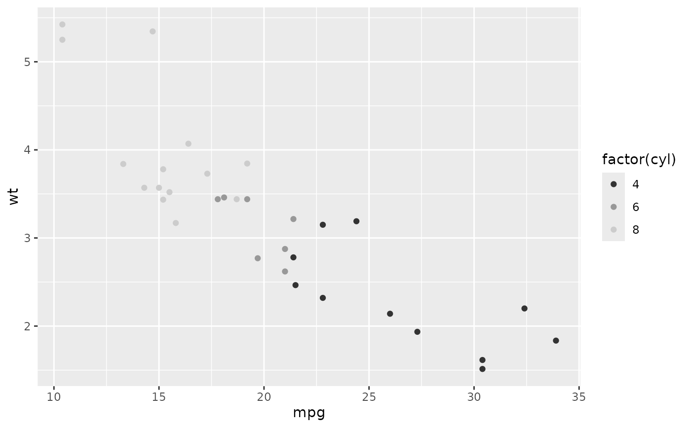
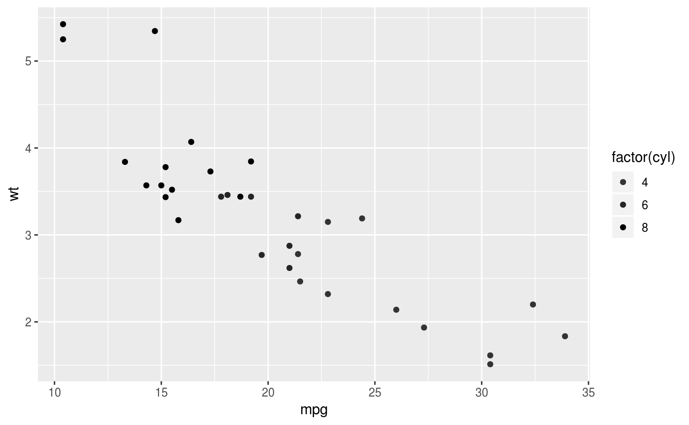
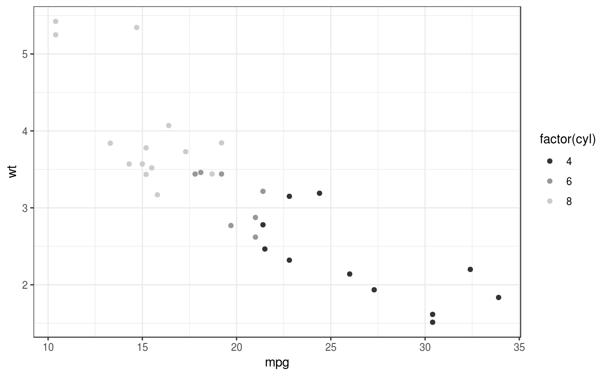
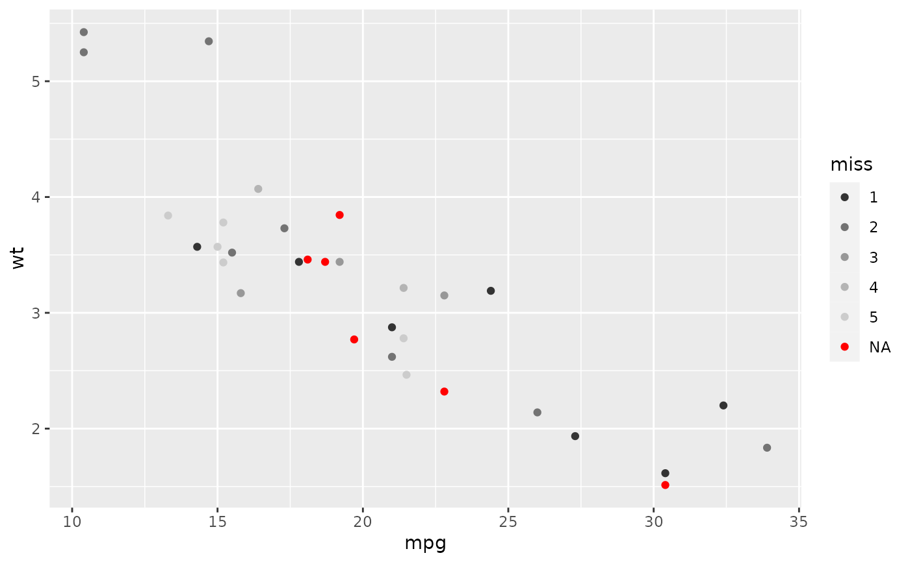
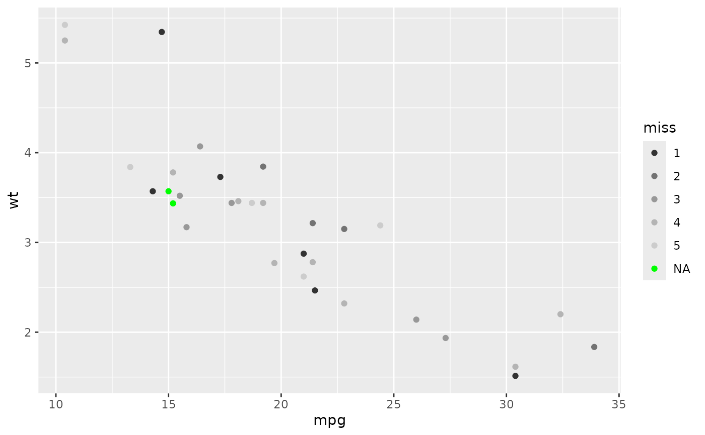

scale_colour_grey(..., start = 0.2, end = 0.8, na.value = "red",
aesthetics = "colour")
scale_fill_grey(..., start = 0.2, end = 0.8, na.value = "red",
aesthetics = "fill")
Arguments
| ... |
Arguments passed on to discrete_scale
- palette
A palette function that when called with a single integer
argument (the number of levels in the scale) returns the values that
they should take. - breaks
One of:
NULL for no breaks
waiver() for the default breaks computed by the
transformation object
A character vector of breaks A function that takes the limits as input and returns breaks
as output - limits
A character vector that defines possible values of the scale
and their order. - drop
Should unused factor levels be omitted from the scale?
The default, TRUE, uses the levels that appear in the data;
FALSE uses all the levels in the factor. - na.translate
Unlike continuous scales, discrete scales can easily show
missing values, and do so by default. If you want to remove missing values
from a discrete scale, specify na.translate = FALSE. - na.value
If na.translate = TRUE, what value aesthetic
value should missing be displayed as? Does not apply to position scales
where NA is always placed at the far right. - aesthetics
The names of the aesthetics that this scale works with - scale_name
The name of the scale - name
The name of the scale. Used as the axis or legend title. If
waiver(), the default, the name of the scale is taken from the first
mapping used for that aesthetic. If NULL, the legend title will be
omitted. - labels
One of:
NULL for no labels
waiver() for the default labels computed by the
transformation object
A character vector giving labels (must be same length as breaks) A function that takes the breaks as input and returns labels
as output - expand
Vector of range expansion constants used to add some
padding around the data, to ensure that they are placed some distance
away from the axes. Use the convenience function expand_scale()
to generate the values for the expand argument. The defaults are to
expand the scale by 5% on each side for continuous variables, and by
0.6 units on each side for discrete variables. - guide
A function used to create a guide or its name. See
guides() for more info. - position
The position of the axis. "left" or "right" for vertical
scales, "top" or "bottom" for horizontal scales - super
The super class to use for the constructed scale |
| start |
grey value at low end of palette |
| end |
grey value at high end of palette |
| na.value |
Colour to use for missing values |
| aesthetics |
Character string or vector of character strings listing the
name(s) of the aesthetic(s) that this scale works with. This can be useful, for
example, to apply colour settings to the colour and fill aesthetics at the
same time, via aesthetics = c("colour", "fill"). |
See also
Examples

p + scale_colour_grey(end = 0)



